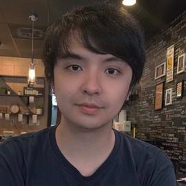
[Brief 2–3 sentence bio describing your research focus, methodology, and overarching goals. This is the first thing visitors will read, so make it clear and compelling — explain what you work on and why it matters.]
[1–2 sentence overview of your lab's research mission and the core problems you're tackling. This sets the stage before the topic areas below.]
[Describe this research thread — what questions you're asking, what methods you use, and what impact it has.]
[Describe this research thread — what questions you're asking, what methods you use, and what impact it has.]
[Describe this research thread — what questions you're asking, what methods you use, and what impact it has.]
[Describe this research thread — what questions you're asking, what methods you use, and what impact it has.]
* denotes equal contribution. For a full list, see Google Scholar.
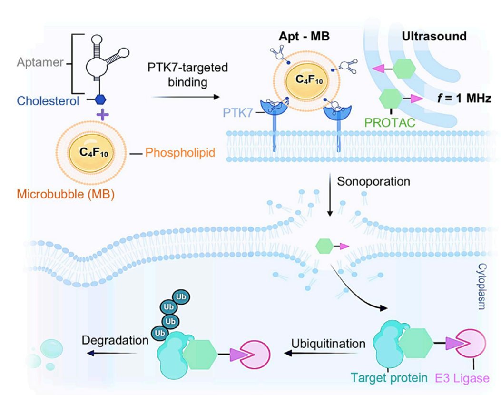
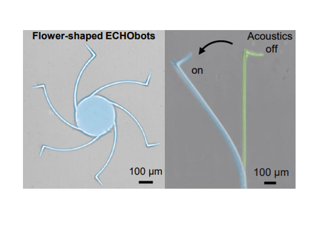
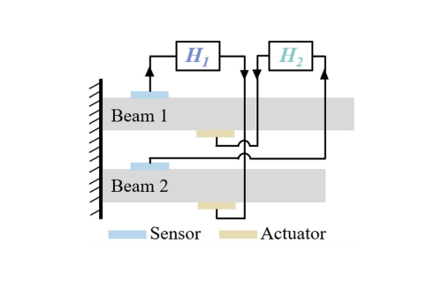
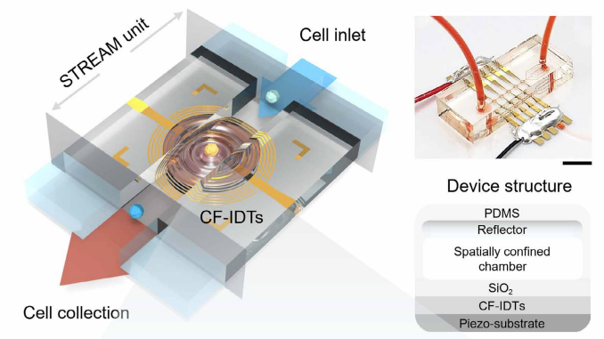
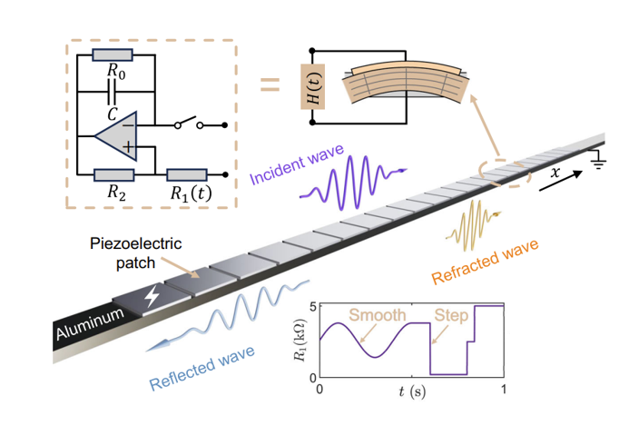
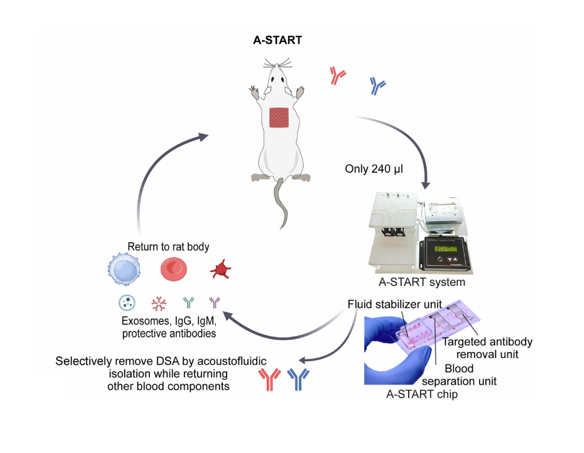
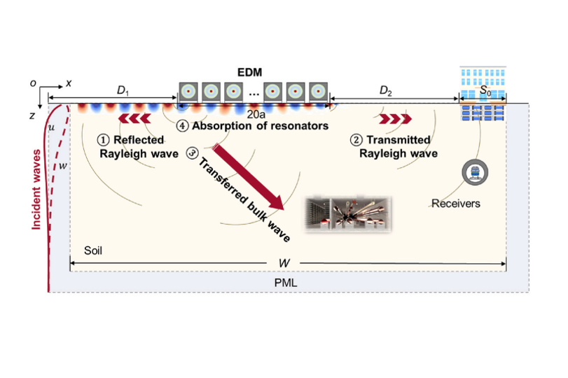
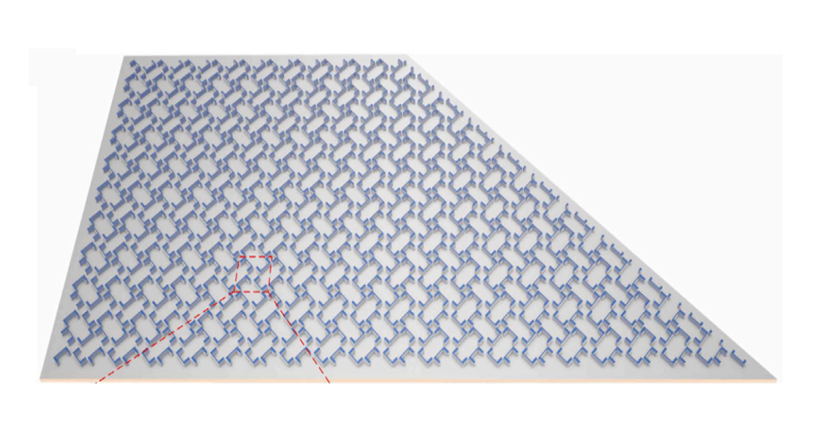
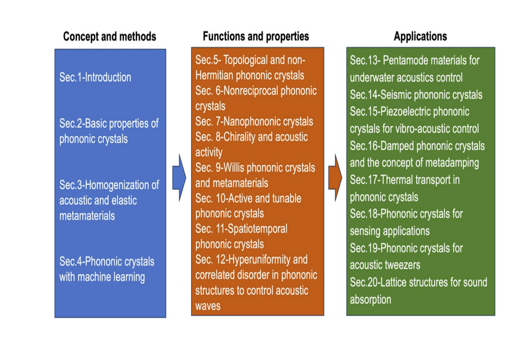
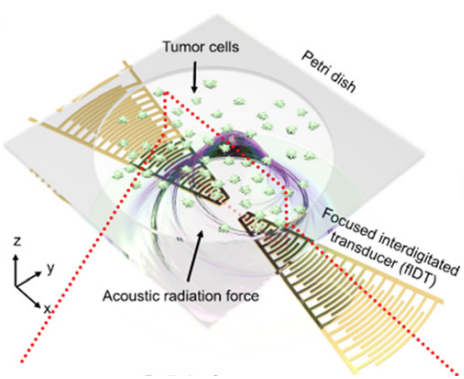
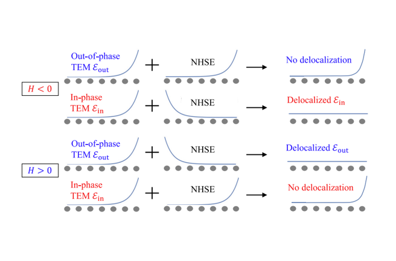
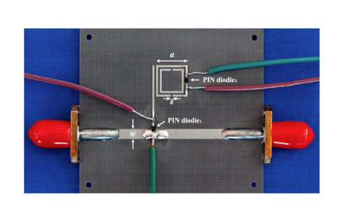
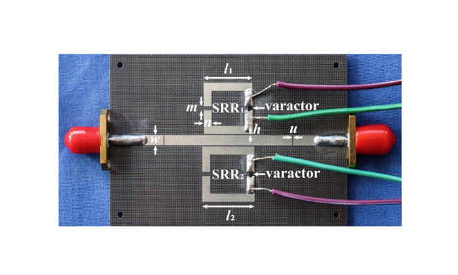
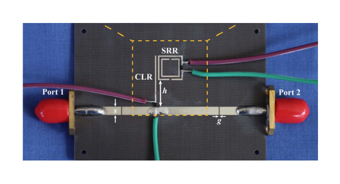
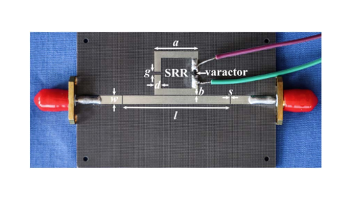
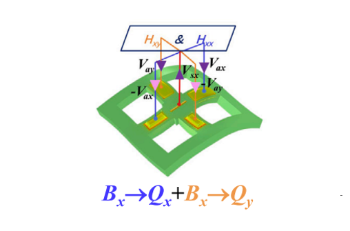
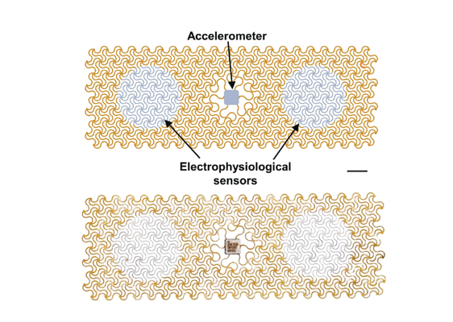
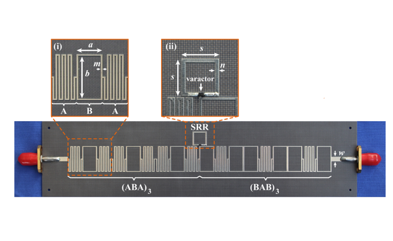
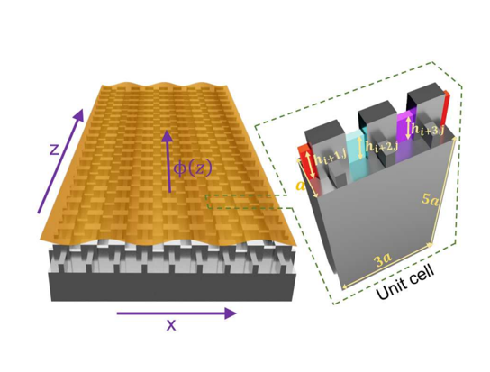
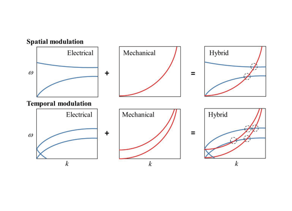
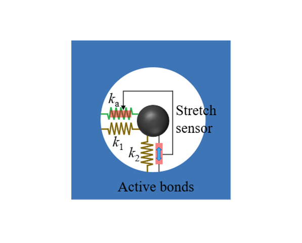
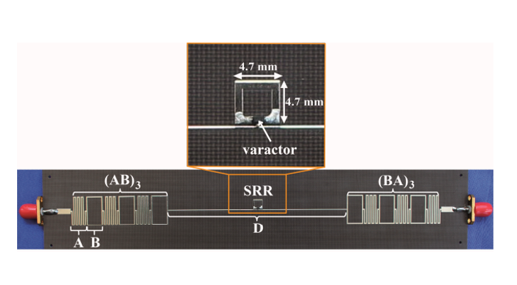
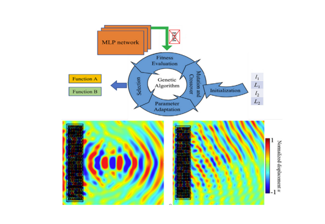
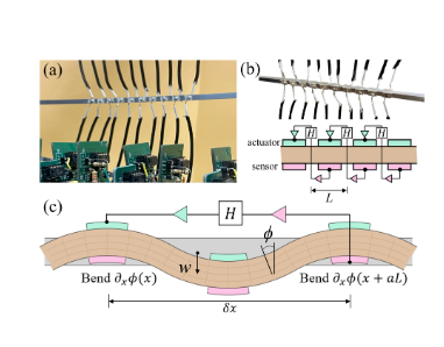
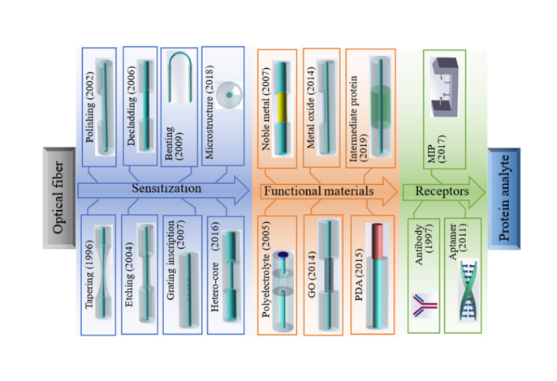
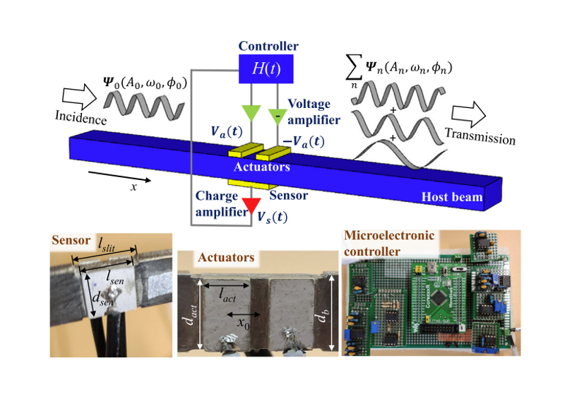
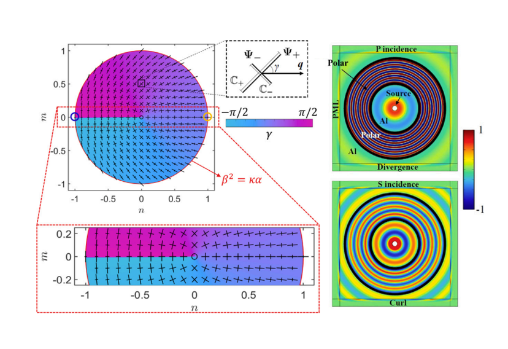
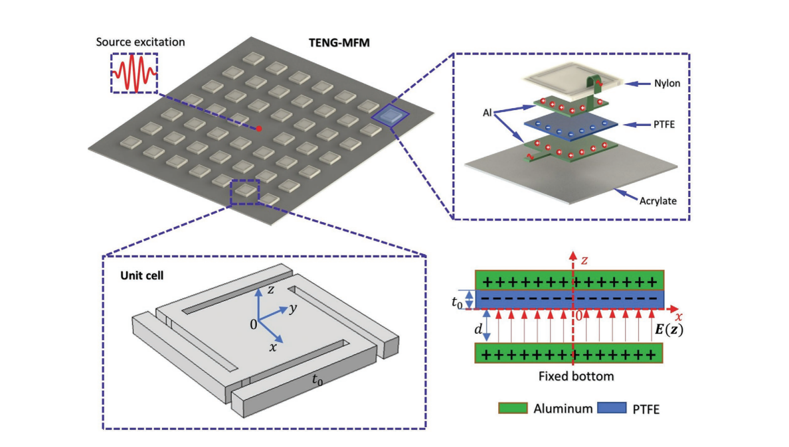
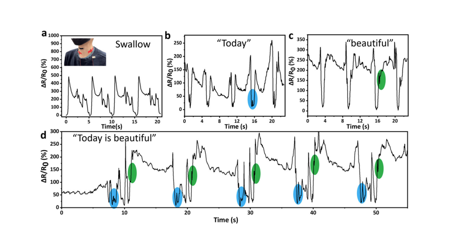
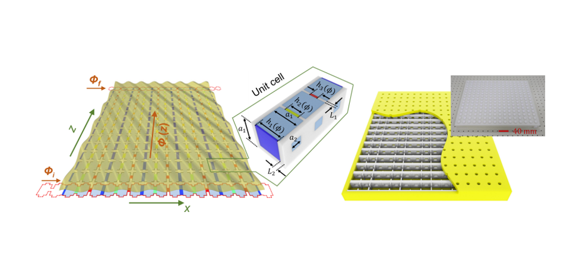
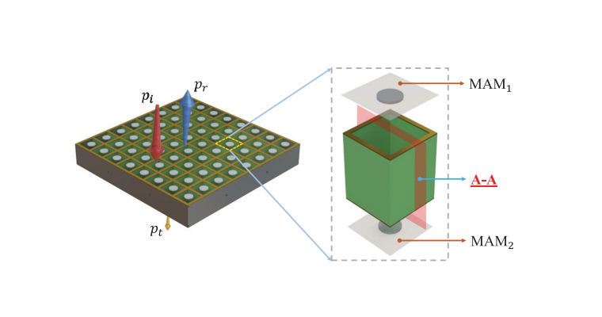
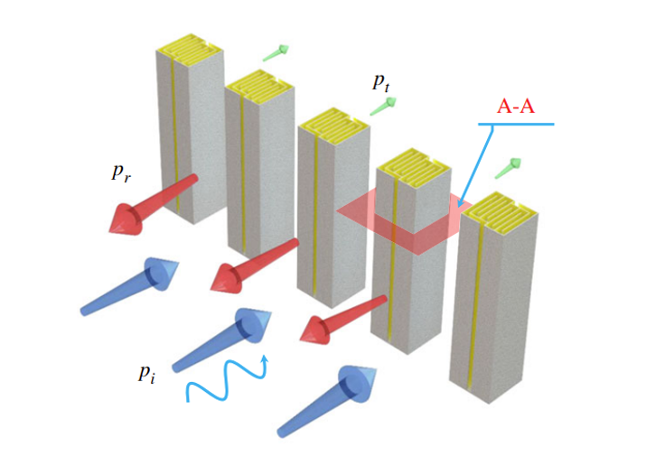
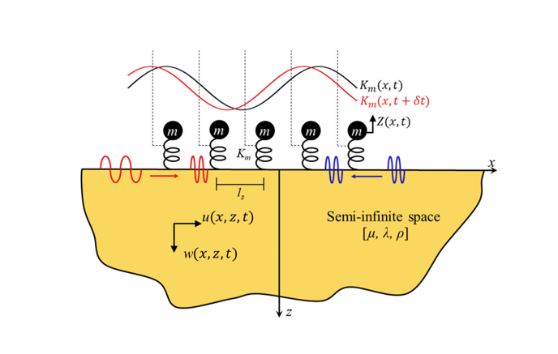
We are always looking for motivated students and researchers to join the lab. If you're interested in working with us, please read the positions below and reach out.
We are recruiting PhD students for the upcoming academic year. We look for candidates with a strong background in [relevant fields], curiosity, and a drive to tackle open problems. Prior research experience is a plus but not required.
To apply, please submit your application through the [Department] graduate admissions portal. You're welcome to email [your name] with the subject line "PhD Application — [Your Name]" and a brief statement of your research interests.
Funded Positions Starting Fall 2025We occasionally have openings for postdoctoral researchers. If your research interests align with the lab's work, please send your CV and a short research statement to [your email].
By InterestWe welcome motivated undergraduates from [University Name] interested in gaining research experience. Students typically commit 10–15 hours per week. Email [your name] with a brief description of your interests and any relevant coursework or projects.
Open Year-Round